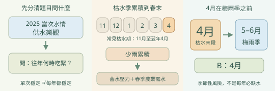
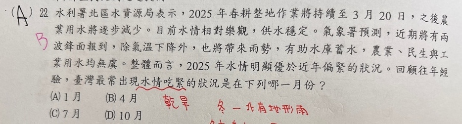

分享原卷｜p05-q22
完整原題
水利署北區水資源局表示，2025年春耕整地作業將持續至3月20日，之後農業用水將逐步減少。目前水情相對樂觀，供水穩定。氣象署預測，近期將有兩波鋒面報到，除氣溫下降外，也將帶來雨勢，有助水庫蓄水，農業、民生與工業用水均無虞。整體而言，2025年水情明顯優於近年偏緊的狀況。回顧往年經驗，臺灣最常出現水情吃緊的狀況是在下列哪一月份？
(A) 1月
(B) 4月
(C) 7月
(D) 10月
先想一想，再查看答案、解說與原圖
原卷作答：A，原卷紅筆訂正B
正確答案：B。4月接近枯水季末段、梅雨季之前，經歷累積少雨且有春耕用水，較易水情吃緊。
逐項解析
| 選項與原句 | 判讀 | 句意與判斷理由 |
|---|---|---|
| (A) 1月 | 不選 | 1月雖在枯水季，但相較長期少雨後的春季末段，通常尚有前一豐水季部分蓄水。 |
| (B) 4月 | 應選 | 4月接近枯水季末段、梅雨季之前，經歷累積少雨且有春耕用水，較易水情吃緊。 |
| (C) 7月 | 不選 | 7月通常有夏季對流雨及颱風帶來降水，不是本題典型枯水季尾端。 |
| (D) 10月 | 不選 | 10月剛接近夏秋主要降雨季結束，與長期枯水累積的4月不同。 |
詳細說明與解題步驟
本題問「回顧往年經驗」，不能拿題幹2025年當次樂觀水情當成全年常態。中南部雨量集中夏半年，通常11月至翌年4月為枯水季，4月已累積多月少雨，梅雨尚未充分補水，加上春耕需求，四選項以B較合適。這是季節性風險，並不代表每年4月必然缺水，也不是全臺各地雨量都完全相同。
【A】1月雖在枯水季，但相較長期少雨後的春季末段，通常尚有前一豐水季部分蓄水。
【B】4月接近枯水季末段、梅雨季之前，經歷累積少雨且有春耕用水，較易水情吃緊。
【C】7月通常有夏季對流雨及颱風帶來降水，不是本題典型枯水季尾端。
【D】10月剛接近夏秋主要降雨季結束，與長期枯水累積的4月不同。

① 當年水情，和往年季節要分開
題幹說2025年水情樂觀，最後卻問回顧往年最常何時吃緊。答題要看季節性風險，不能用這一次供水穩定，就推成其他年份也一樣。
② 少雨累積，加上春季農業需水
中南部常見枯水期約為11月至翌年4月。到春季末段，少雨已累積多月，還有農業用水需求，蓄水調度壓力可能加大。
③ 四個月份中，4月最接近枯水尾端
梅雨一般在5、6月。四個選項中，4月最接近枯水季尾端、梅雨前的時段，因此選B。這是常見季節風險，不表示全臺每年4月都必缺水。
④ 看往年季節風險，找梅雨前的4月
答案 B：4月
- 枯水季累積少雨，春季仍有用水需求。
- 4月接近梅雨季之前的枯水尾端。
- 依四個選項比較，不把單次樂觀水情當常態。
- 各地、各年情況不同，並非4月必然缺水。
核對註記：已實看原卷題幹、選項與作答必要材料；無可核對康軒冊次章節證據，歸綜合。題內時事數據保留原題情境，不冒充今日統計。
原圖（僅本題）
